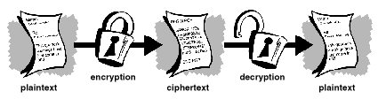

Introduction
The following text is taken from the document Introduction to Cryptography in the PGP 6.5.1 documentation. Copyright © 1990-1999 Network Associates, Inc. and its Affiliated Companies.
Table of Contents
- The Basics of Cryptography
- Encryption and decryption
- What is cryptography?
- Conventional cryptography
- Public key cryptography
- How OpenPGP works
- Keys
- Digital signatures
- Digital certificates
- Validity and trust
- Certificate Revocation
- What is a passphrase?
- Key splitting
The Basics of Cryptography
When Julius Caesar sent messages to his generals, he didn't trust his messengers. So he replaced every A in his messages with a D, every B with an E, and so on through the alphabet. Only someone who knew the "shift by 3" rule could decipher his messages.
And so we begin.
Encryption and decryption
Data that can be read and understood without any special measures is called plaintext or cleartext. The method of disguising plaintext in such a way as to hide its substance is called encryption. Encrypting plaintext results in unreadable gibberish called ciphertext. You use encryption to ensure that information is hidden from anyone for whom it is not intended, even those who can see the encrypted data. The process of reverting ciphertext to its original plaintext is called decryption. Figure 1-1 illustrates this process.
Figure 1-1. Encryption and decryption
What is cryptography?
Cryptography is the science of using mathematics to encrypt and decrypt data. Cryptography enables you to store sensitive information or transmit it across insecure networks (like the Internet) so that it cannot be read by anyone except the intended recipient.While cryptography is the science of securing data, cryptanalysis is the science of analyzing and breaking secure communication. Classical cryptanalysis involves an interesting combination of analytical reasoning, application of mathematical tools, pattern finding, patience, determination, and luck. Cryptanalysts are also called attackers.
Cryptology embraces both cryptography and cryptanalysis.
Strong cryptography
"There are two kinds of cryptography in this world: cryptography that will stop your kid sister from reading your files, and cryptography that will stop major governments from reading your files. This book is about the latter."
--Bruce Schneier, Applied Cryptography: Protocols, Algorithms, and Source
Code in C.
OpenPGP is also about the latter sort of cryptography. Cryptography can be strong or weak, as explained above. Cryptographic strength is measured in the time and resources it would require to recover the plaintext. The result of strong cryptography is ciphertext that is very difficult to decipher without possession of the appropriate decoding tool. How difficult? Given all of today's computing power and available time — even a billion computers doing a billion checks a second — it is not possible to decipher the result of strong cryptography before the end of the universe.
One would think, then, that strong cryptography would hold up rather well against even an extremely determined cryptanalyst. Who's really to say? No one has proven that the strongest encryption obtainable today will hold up under tomorrow's computing power. However, the strong cryptography employed by OpenPGP is the best available today. Vigilance and conservatism will protect you better, however, than claims of impenetrability.
How does cryptography work?
A cryptographic algorithm, or cipher, is a mathematical function used in the encryption and decryption process. A cryptographic algorithm works in combination with a key — a word, number, or phrase — to encrypt the plaintext. The same plaintext encrypts to different ciphertext with different keys. The security of encrypted data is entirely dependent on two things: the strength of the cryptographic algorithm and the secrecy of the key.A cryptographic algorithm, plus all possible keys and all the protocols that make it work comprise a cryptosystem. OpenPGP is a cryptosystem.
Conventional cryptography
In conventional cryptography, also called secret-key or symmetric-key encryption, one key is used both for encryption and decryption. The Data Encryption Standard (DES) is an example of a conventional cryptosystemthat is widely employed by the Federal Government. Figure 1-2 is an illustration of the conventional encryption process.
Figure 1-2. Conventional encryption
Caesar's Cipher
An extremely simple example of conventional cryptography is a substitution cipher. A substitution cipher substitutes one piece of information for another. This is most frequently done by offsetting letters of the alphabet. Two examples are Captain Midnight's Secret Decoder Ring, which you may have owned when you were a kid, and Julius Caesar's cipher. In both cases, the algorithm is to offset the alphabet and the key is the number of characters to offset it.For example, if we encode the word "SECRET" using Caesar's key value of 3, we offset the alphabet so that the 3rd letter down (D) begins the alphabet.
So starting with
ABCDEFGHIJKLMNOPQRSTUVWXYZ
and sliding everything up by 3, you get
DEFGHIJKLMNOPQRSTUVWXYZABC
where D=A, E=B, F=C, and so on.
Using this scheme, the plaintext, "SECRET" encrypts as "VHFUHW." To allow someone else to read the ciphertext, you tell them that the key is 3.
Obviously, this is exceedingly weak cryptography by today's standards, but hey, it worked for Caesar, and it illustrates how conventional cryptography works.
Key management and conventional encryption
Conventional encryption has benefits. It is very fast. It is especially useful for encrypting data that is not going anywhere. However, conventional encryption alone as a means for transmitting secure data can be quite expensive simply due to the difficulty of secure key distribution.Recall a character from your favorite spy movie: the person with a locked briefcase handcuffed to his or her wrist. What is in the briefcase, anyway? It's probably not the missile launch code/ biotoxin formula/ invasion plan itself. It's the key that will decrypt the secret data.
For a sender and recipient to communicate securely using conventional encryption, they must agree upon a key and keep it secret between themselves. If they are in different physical locations, they must trust a courier, the Bat Phone, or some other secure communication medium to prevent the disclosure of the secret key during transmission. Anyone who overhears or intercepts the key in transit can later read, modify, and forge all information encrypted or authenticated with that key. From DES to Captain Midnight's Secret Decoder Ring, the persistent problem with conventional encryption is key distribution: how do you get the key to the recipient without someone intercepting it?
Public key cryptography
The problems of key distribution are solved by public key cryptography, the concept of which was introduced by Whitfield Diffie and Martin Hellman in 1975. (There is now evidence that the British Secret Service invented it a few years before Diffie and Hellman, but kept it a military secret — and did nothing with it. [J H Ellis: The Possibility of Secure Non-Secret Digital Encryption, CESG Report, January 1970])Public key cryptography is an asymmetric scheme that uses a pair of keys for encryption: a public key, which encrypts data, and a corresponding private, or secret key for decryption. Youpublishyour public keytotheworldwhile keeping your private key secret. Anyone with a copy of your public key can then encrypt information that only you can read. Even people you have never met.
It is computationally infeasible to deduce the private key from the public key. Anyone who has a public key can encrypt information but cannot decrypt it. Only the person who has the corresponding private key can decrypt the information.

Figure 1-3. Public key encryption
The primary benefit of public key cryptography is that it allows people who have no preexisting security arrangement to exchange messages securely. The need for sender and receiver to share secret keys via some secure channel is eliminated; all communications involve only public keys, and no private key is ever transmitted or shared. Some examples of public-key cryptosystems are Elgamal (named for its inventor, Taher Elgamal), RSA (named for its inventors, Ron Rivest, Adi Shamir, and Leonard Adleman), Diffie-Hellman (named, you guessed it, for its inventors), and DSA, the Digital Signature Algorithm (invented by David Kravitz).
Because conventional cryptography was once the only available means for relaying secret information, the expense of secure channels and key distribution relegated its use only to those who could afford it, such as governments and large banks (or small children with secret decoder rings). Public key encryption is the technological revolution that provides strong cryptography to the adult masses. Remember the courier with the locked briefcase handcuffed to his wrist? Public-key encryption puts him out of business (probably to his relief).
How OpenPGP works
OpenPGP combines some of the best features of both conventional and public key cryptography. OpenPGP is a hybrid cryptosystem. When a user encrypts plaintext with OpenPGP, OpenPGP first compresses the plaintext. Data compression saves modem transmission time and disk space and, more importantly, strengthens cryptographic security. Most cryptanalysis techniques exploit patterns found in the plaintext to crack the cipher. Compression reduces these patterns in the plaintext, thereby greatly enhancing resistance to cryptanalysis. (Files that are too short to compress or which don't compress well aren't compressed.)OpenPGP then creates a session key, which is a one-time-only secret key. This key is a random number generated from the random movements of your mouse and the keystrokes you type. This session key works with a very secure, fast conventional encryption algorithm to encrypt the plaintext; the result is ciphertext. Once the data is encrypted, the session key is then encrypted to the recipient's public key. This public key-encrypted session key is transmitted along with the ciphertext to the recipient.

Figure 1-4. How OpenPGP encryption works
Decryption works in the reverse. The recipient's copy of OpenPGP uses his or her private key to recover the temporary session key, which OpenPGP then uses to decrypt the conventionally-encrypted ciphertext.

Figure 1-5. How OpenPGP decryption works
The combination of the two encryption methods combines the convenience of public key encryption with the speed of conventional encryption. Conventional encryption is about 1, 000 times faster than public key encryption. Public key encryption in turn provides a solution to key distribution and data transmission issues. Used together, performance and key distribution are improved without any sacrifice in security.
Keys
A key is a value that works with a cryptographic algorithm to produce a specific ciphertext. Keys are basically really, really, really big numbers. Key size is measured in bits; the number representing a 1024-bit key is darn huge. In public key cryptography, the bigger the key, the more secure the ciphertext.However, public key size and conventional cryptography's secret key size are totally unrelated. A conventional 80-bit key has the equivalent strength of a 1024-bit public key. A conventional 128-bit key is equivalent to a 3000-bit public key. Again, the bigger the key, the more secure, but the algorithms used for each type of cryptography are very different and thus comparison is like that of apples to oranges.
While the public and private keys are mathematically related, it's very difficult to derive the private key given only the public key; however, deriving the private key is always possible given enough time and computing power. This makes it very important to pick keys of the right size; large enough to be secure, but small enough to be applied fairly quickly. Additionally, you need to consider who might be trying to read your files, how determined they are, how much time they have, and what their resources might be.
Larger keys will be cryptographically secure for a longer period of time. If what you want to encrypt needs to be hidden for many years, you might want to use a very large key. Of course, who knows how long it will take to determine your key using tomorrow's faster, more efficient computers? There was a time when a 56-bit symmetric key was considered extremely safe.
Keys are stored in encrypted form. OpenPGP stores the keys in two files on your hard disk; one for public keys and one for private keys. These files are called keyrings. As you use OpenPGP, you will typically add the public keys of your recipients to your public keyring. Your private keys are stored on your private keyring. If you lose your private keyring, you will be unable to decrypt any information encrypted to keys on that ring.
Digital signatures
Amajor benefit of public key cryptography is that it provides a method for employing digital signatures. Digital signatures enable the recipient of information to verify the authenticity of the information's origin, and also verify that the information is intact. Thus, public key digital signatures provide authentication and data integrity. A digital signature also provides non-repudiation, which means that it prevents the sender from claiming that he or she did not actually send the information. These features are every bit as fundamental to cryptography as privacy, if not more.A digital signature serves the same purpose as a handwritten signature. However, a handwritten signature is easy to counterfeit. A digital signature is superior to a handwritten signature in that it is nearly impossible to counterfeit, plus it attests to the contents of the information as well as to the identity of the signer.
Some people tend to use signatures more than they use encryption. For example, you may not care if anyone knows that you just deposited $1000 in your account, but you do want to be darn sure it was the bank teller you were dealing with.
The basic manner in which digital signatures are created is illustrated in Figure 1-6. Instead of encrypting information using someone else's public key, you encrypt it with your private key. If the information can be decrypted with your public key, then it must have originated with you.

Figure 1-6. Simple digital signatures
Hash functions
The system described above has some problems. It is slow, and it produces an enormous volume of data — at least double the size of the original information. An improvement on the above scheme is the addition of a one-way hash function in the process. A one-way hash function takes variable-length input — in this case, a message of any length, even thousands or millions of bits — and produces a fixed-length output; say, 160-bits. The hash function ensures that, if the information is changed in any way — even by just one bit — an entirely different output value is produced.OpenPGP uses a cryptographically strong hash function on the plaintext the user is signing. This generates a fixed-length data item known as a message digest. (Again, any change to the information results in a totally different digest.)
Then OpenPGP uses the digest and the private key to create the "signature." OpenPGP transmits the signature and the plaintext together. Upon receipt of the message, the recipient uses OpenPGP to recompute the digest, thus verifying the signature. OpenPGP can encrypt the plaintext or not; signing plaintext is useful if some of the recipients are not interested in or capable of verifying the signature.
As long as a secure hash function is used, there is no way to take someone's signature from one document and attach it to another, or to alter a signed message in any way. The slightest change in a signed document will cause the digital signature verification process to fail.

Figure 1-7. Secure digital signatures
Digital signatures play a major role in authenticating and validating other OpenPGP users' keys.
Digital certificates
One issue with public key cryptosystems is that users must be constantly vigilant to ensure that they are encrypting to the correct person's key. In an environment where it is safe to freely exchange keys via public servers, man-in-the-middle attacks are a potential threat. In this type of attack, someone posts a phony key with the name and user ID of the user's intended recipient. Data encrypted to — and intercepted by — the true owner of this bogus key is now in the wrong hands.In a public key environment, it is vital that you are assured that the public key to which you are encrypting data is in fact the public key of the intended recipient and not a forgery. You could simply encrypt only to those keys which have been physically handed to you. But suppose you need to exchange information with people you have never met; how can you tell that you have the correct key?
Digital certificates, or certs, simplify the task of establishing whether a public key truly belongs to the purported owner.
A certificate is a form of credential. Examples might be your driver's license, your social security card, or your birth certificate. Each of these has some information on it identifying you and some authorization stating that someone else has confirmed your identity. Some certificates, such as your passport, are important enough confirmation of your identity that you would not want to lose them, lest someone use them to impersonate you.
A digital certificate is data that functions much like a physical certificate. A digital certificate is information included with a person's public key that helps others verify that a key is genuine or valid. Digital certificates are used to thwart attempts to substitute one person's key for another.
A digital certificate consists of three things:
- A public key.
- Certificate information. ("Identity" information about the user, such as name, user ID, and so on.)
- One or more digital signatures.
Thus, a certificate is basically a public key with one or two forms of ID attached, plus a hearty stamp of approval from some other trusted individual.
Figure 1-8. Anatomy of a OpenPGP certificate
Certificate distribution
Certificates are utilized when it's necessary to exchange public keys with someone else. For small groups of people who wish to communicate securely, it is easy to manually exchange diskettes or emails containing each owner's public key. This is manual public key distribution, anditispracticalonlytoa certain point. Beyond that point, it is necessary to put systems into place that can provide the necessary security, storage, and exchange mechanisms so coworkers, business partners, or strangers could communicate if need be. These can come in the form of storage-only repositories called Certificate Servers, or more structured systems that provide additional key management features and are called Public Key Infrastructures (PKIs).
Certificate servers
A certificate server, also calledacert server or a key server, is a database that allows users to submit and retrieve digital certificates. A cert server usually provides some administrative features that enable a company to maintain its security policies — for example, allowing only those keys that meet certain requirements to be stored.
Public Key Infrastructures
A PKI contains the certificate storage facilities of a certificate server, but also provides certificate management facilities (the ability to issue, revoke, store, retrieve, and trust certificates). The main feature of a PKI is the introduction of what is known as a Certification Authority, orCA, whichisahumanentity — a person, group, department, company, or other association — that an organization has authorized to issue certificates to its computer users. (A CA's role is analogous to a country's government's Passport Office.) A CA creates certificates and digitally signs them using the CA's private key. Because of its role in creating certificates, the CA is the central component of a PKI. Using the CA's public key, anyone wanting to verify a certificate's authenticity verifies the issuing CA's digital signature, and hence, the integrity of the contents of the certificate (most importantly, the public key and the identity of the certificate holder).
Certificate formats
A digital certificate is basically a collection of identifying information bound together with a public key and signed by a trusted third party to prove its authenticity. A digital certificate can be one of a number of different formats.OpenPGP recognizes two different certificate formats:
- OpenPGP certificates
- X.509 certificates
OpenPGP certificate format
A OpenPGP certificate includes (but is not limited to) the following information:- The OpenPGP version number — this identifies which version of OpenPGP was used
to create the key associated with the certificate.
- The certificate holder's public key — the public portion of your key pair,
together with the algorithm of the key: RSA, DH (Diffie-Hellman), or DSA
(Digital Signature Algorithm).
- The certificate holder's information — this consists of "identity"
information about the user, such as his or her name, user ID, photograph,
and so on.
- The digital signature of the certificate owner — also called a self-signature,
this is the signature using the corresponding private key of the public key
associated with the certificate.
- The certificate's validity period — the certificate's start date/ time and
expiration date/ time; indicates when the certificate will expire.
- The preferred symmetric encryption algorithmfor the key — indicates the encryption algorithm to which the certificate owner prefers to have information encrypted. The supported algorithms are CAST, IDEA or Triple-DES.
One unique aspect of the OpenPGP certificate format is that a single certificate can contain multiple signatures. Several or many people may sign the key/ identification pair to attest to their own assurance that the public key definitely belongs to the specified owner. If you look on a public certificate server, you may notice that certain certificates, such as that of OpenPGP's creator, Phil Zimmermann, contain many signatures.
Some OpenPGP certificates consist of a public key with several labels, each of which contains a different means of identifying the key's owner (for example, the owner's name and corporate email account, the owner's nickname and home email account, a photograph of the owner — all in one certificate). The list of signatures of each of those identities may differ; signatures attest to the authenticity that one of the labels belongs to the public key, not that all the labels on the key are authentic. (Note that 'authentic' is in the eye of its beholder — signatures are opinions, and different people devote different levels of due diligence in checking authenticity before signing a key.)
Figure 1-9. A OpenPGP certificate
X.509 certificate format
X.509 is another very common certificate format. All X.509 certificates comply with the ITU-T X.509 international standard; thus (theoretically) X.509 certificates created for one application can be used by any application complying with X.509. In practice, however, different companies have created their own extensions to X.509 certificates, not all of which work together.Acertificate requires someone to validate that a public key and the name of the key's owner go together. With OpenPGP certificates, anyone can play the role of validator. With X.509 certificates, the validator is always a Certification Authority or someone designated by a CA. (Bear in mind that OpenPGP certificates also fully support a hierarchical structure using a CA to validate certificates.)
An X.509 certificate is a collection of a standard set of fields containing information about a user or device and their corresponding public key. The X.509 standard defines what information goes into the certificate, and describes how to encode it (the data format). All X.509 certificates have the following data:
- The X.509 version number — this identifies which version of the X.509
standardapplies to this certificate, whichaffects what informationcanbe
specified in it. The most current is version 3.
- The certificate holder's public key — the public key of the certificate
holder, together with an algorithm identifier which specifies which
cryptosystem the key belongs to and any associated key parameters.
- The serial number of the certificate — the entity (application or person)
that created the certificate is responsible for assigning it a unique serial
number to distinguish it from other certificates it issues. This information
is used in numerous ways; for example when a certificate is revoked, its
serial number is placed in a Certificate Revocation List or CRL.
- The certificate holder's unique identifier — (or DN — distinguished name).
This name is intended to be unique across the Internet. This name is
intended to be unique across the Internet. A DN consists of multiple
subsections and may look something like this:
CN=Bob Allen, OU=Total Network Security Division, O=Network Associates, Inc., C=US
(These refer to the subject's Common Name, Organizational Unit, Organization, and Country.)
- The certificate's validity period — the certificate's start date/ time and
expiration date/ time; indicates when the certificate will expire.
- The unique name of the certificate issuer — the unique name of the entity
that signed the certificate. This is normally a CA. Using the certificate
implies trusting the entity that signed this certificate. (Note that in some
cases, such as root or top-level CA certificates, the issuer signs its own
certificate.)
- The digital signature of the issuer — the signature using the private key of
the entity that issued the certificate.
- The signature algorithm identifier — identifies the algorithm used by the CA to sign the certificate.
- you can create your own OpenPGP certificate; you must request and be issued
an X.509 certificate from a Certification Authority
- X.509 certificates natively support only a single name for the key's owner
- X.509 certificates support only a single digital signature to attest to the key's validity
You might think of an X.509 certificate as looking like a standard paper certificate (similar to one you might have received for completing a class in basic First Aid) with a public key taped to it. It has your name and some information about you on it, plus the signature of the person who issued it to you.
Figure 1-10. An X.509 certificate
Probably the most widely visible use of X.509 certificates today is in web browsers.
Validity and trust
Every user in a public key system is vulnerable to mistaking a phony key (certificate) for a real one. Validity is confidence that a public key certificate belongs to its purported owner. Validity is essential in a public key environment where you must constantly establish whether or not a particular certificate is authentic.When you've assured yourself that a certificate belonging to someone else is valid, you can sign the copy on your keyring to attest to the fact that you've checked the certificate and that it's an authentic one. If you want others to know that you gave the certificate your stamp of approval, you can export the signatureto a certificateserver so that others canseeit.
As described in the section Public Key Infrastructures, some companies designate one or more Certification Authorities (CAs) to indicate certificate validity. In an organization using a PKI with X.509 certificates, it is the job of the CA to issue certificates to users — a process which generally entails responding to a user's request for a certificate. In an organization using OpenPGP certificates without a PKI, it is the job of the CA to check the authenticity of all OpenPGP certificates and then sign the good ones. Basically, the main purpose of a CA is to bind a public key to the identification information contained in the certificate and thus assure third parties that some measure of care was taken to ensure that this binding of the identification information and key is valid.
The CA is the Grand Pooh-bah of validation in an organization; someone whom everyone trusts, and in some organizations, like those using a PKI, no certificate is considered valid unless it has been signed by a trusted CA.
Checking validity
One way to establish validity is to go through some manual process. There are several ways to accomplish this. You could require your intended recipient to physically hand you a copy of his or her public key. But this is often inconvenient and inefficient.Another way is to manually check the certificate's fingerprint. Just as every human's fingerprints are unique, every OpenPGP certificate's fingerprint is unique. The fingerprint is a hash of the user's certificate and appears as one of the certificate's properties. In OpenPGP, the fingerprint can appear as a hexadecimal number or a series of so-called biometric words, which are phonetically distinct and are used to make the fingerprint identification process a little easier.
You can check that a certificate is valid by calling the key's owner (so that you originate the transaction) and asking the owner to read his or her key's fingerprint to you and verifying that fingerprint against the one you believe to be the real one. This works if you know the owner's voice, but, how do you manually verify the identity of someone you don't know? Some people put the fingerprint of their key on their business cards for this very reason.
Another way to establish validity of someone's certificate is to trust that a third individual has gone through the process of validating it.
A CA, for example, is responsible for ensuring that prior to issuing to a certificate, he or she carefully checks it to be sure the public key portion really belongs to the purported owner. Anyone who trusts the CA will automatically consider any certificates signed by the CA to be valid.
Another aspect of checking validity is to ensure that the certificate has not been revoked. For more information, see the section Certificate Revocation.
Establishing trust
You validate certificates. You trust people. More specifically, you trust people to validate other people' certificates. Typically, unless the owner hands you the certificate, you have to go by someone else's word that it is valid.
Meta and trusted introducers
In most situations, people completely trust the CA to establish certificates' validity. This means that everyone else relies upon the CA to go through the whole manual validation process for them. This is fine up to a certain number of users or number of work sites, and then it is not possible for the CA to maintain the same level of quality validation. In that case, adding other validators to the system is necessary.A CA can also be a meta-introducer. A meta-introducer bestows not only validity on keys, but bestows the ability to trust keys upon others. Similar to the king who hands his seal to his trusted advisors so they can act on his authority, the meta-introducer enables others to act as trusted introducers. These trusted introducers can validate keys to the same effect as that of the meta-introducer. They cannot, however, create new trusted introducers.
Meta-introducer and trusted introducer are OpenPGP terms. In an X.509 environment, the meta-introducer is called the root Certification Authority (root CA) and trusted introducers subordinate Certification Authorities.
The root CA uses the private key associated with a special certificate type called a root CA certificate to sign certificates. Any certificate signed by the root CA certificate is viewed as valid by any other certificate signed by the root. This validation process works even for certificates signed by other CAs in the system — as long as the root CA certificate signed the subordinate CA's certificate, any certificate signed by the CAis considered valid to others within the hierarchy. This process of checking back up through the systemto see who signed whose certificate is called tracing a certification path or certification chain.
Trust models
In relatively closed systems, such as within a small company, it is easy to trace a certification path back to the root CA. However, users must often communicate with people outside of their corporate environment, including some whom they have never met, such as vendors, customers, clients, associates, and so on. Establishing a line of trust to those who have not been explicitly trusted by your CA is difficult.Companies followone or another trust model, which dictates how users will go about establishing certificate validity. There are three different models:
- Direct Trust
- Hierarchical Trust
- A Web of Trust
Direct Trust
Direct trust is the simplest trust model. In this model, a user trusts that a key is valid because he or she knows where it came from. All cryptosystems use this form of trust in some way. For example, in web browsers, the root Certification Authority keys are directly trusted because they were shipped by the manufacturer. If there is any form of hierarchy, it extends from these directly trusted certificates.In OpenPGP, a user who validates keys herself and never sets another certificate to be a trusted introducer is using direct trust.
Figure 1-11. Direct trust
Hierarchical Trust
In a hierarchical system, there are a number of "root" certificates from which trust extends. These certificates may certify certificates themselves, or they may certify certificates that certify still other certificates down some chain. Consider it as a big trust "tree." The "leaf" certificate's validity is verified by tracing backward from its certifier, to other certifiers, until a directly trusted root certificate is found.
Figure 1-12. Hierarchical trust
Web of Trust
A web of trust encompasses both of the other models, but also adds the notion that trust is in the eye of the beholder (which is the real-world view) and the idea that more information is better. It is thus a cumulative trust model. A certificate might be trusted directly, or trusted in some chain going back to a directly trusted root certificate (the meta-introducer), or by some group of introducers.Perhaps you've heard of the term six degrees of separation, which suggests that any person in the world can determine some link to any other person in the world using six or fewer other people as intermediaries. This is a web of introducers.
It is also the OpenPGP view of trust. OpenPGP uses digital signatures as its form of introduction. When any user signs another's key, he or she becomes an introducer of that key. As this process goes on, it establishes a web of trust.
In a OpenPGP environment, any user can act as a certifying authority. Any OpenPGP user can validate another OpenPGP user's public key certificate. However, such a certificate is only valid to another user if the relying party recognizes the validator as a trusted introducer. (That is, you trust my opinion that others' keys are valid only if you consider me to be a trusted introducer. Otherwise, my opinion on other keys' validity is moot.)
Stored on each user's public keyring are indicators of
- whether or not the user considers a particular key to be valid
- the level of trust the user places on the key that the key's owner can serve as certifier of others' keys
Levels of trust in OpenPGP
The highest level of trust in a key, implicit trust, is trust in your own key pair. OpenPGP assumes that if you own the private key, you must trust the actions of its related public key. Any keys signed by your implicitly trusted key are valid.There are three levels of trust you can assign to someone else's public key:
- Complete trust
- Marginal trust
- Notrust (or Untrusted)
- Valid
- Marginally valid
- Invalid
- Start with a valid key, one that is either
- signed by you or
- signed by another trusted introducer
- Set the level of trust you feel the key's owner is entitled.
For example, suppose your key ring contains Alice's key. You have validated Alice's key and you indicate this by signing it. You know that Alice is a real stickler for validating others' keys. You therefore assign her key with Complete trust. This makes Alice a Certification Authority. If Alice signs another's key, it appears as Valid on your keyring.
OpenPGP requires one Completely trusted signature or two Marginally trusted signatures to establish a key as valid. OpenPGP's method of considering two Marginals equal to one Complete is similar to a merchant asking for two forms of ID. You might consider Alice fairly trustworthy and also consider Bob fairly trustworthy. Either one alone runs the risk of accidentally signing a counterfeit key, so you might not place complete trust in either one. However, the odds that both individuals signed the same phony key are probably small.
Certificate Revocation
Certificates are only useful while they are valid. It is unsafe to simply assume that a certificate is valid forever. In most organizations and in all PKIs, certificates have a restricted lifetime. This constrains the period in which a system is vulnerable should a certificate compromise occur.Certificates are thus created with a scheduled validity period: a start date/time and an expiration date/ time. The certificate is expected to be usable for its entire validity period (its lifetime). When the certificate expires, it will no longer be valid, as the authenticity of its key/ identification pair are no longer assured. (The certificate can still be safely used to reconfirm information that was encrypted or signed within the validity period — it should not be trusted for cryptographic tasks moving forward, however.)
There are also situations where it is necessary to invalidate a certificate prior to its expiration date, such as when an the certificate holder terminates employment with the company or suspects that the certificate's corresponding private key has been compromised. This is called revocation. Arevoked certificate is much more suspect than an expired certificate. Expired certificates are unusable, but do not carry the same threat of compromise as a revoked certificate.
Anyone who has signed a certificate can revoke his or her signature on the certificate (provided he or she uses the same private key that created the signature). Arevoked signature indicates that the signer no longer believes the public key and identification information belong together, or that the certificate's public key (or corresponding private key) has been compromised. A revoked signature should carry nearly as much weight as a revoked certificate.
With X.509 certificates, a revoked signature is practically the same as a revoked certificate given that the only signature on the certificate is the one that made it valid in the first place — the signature of the CA. OpenPGP certificates provide the added feature that you can revoke your entire certificate (not just the signatures on it) if you yourself feel that the certificate has been compromised.
Only the certificate's owner (the holder of its corresponding private key) or someone whom the certificate's owner has designated as a revoker can revoke a OpenPGP certificate. (Designating a revoker is a useful practice, as it's often the loss of the passphrase for the certificate's corresponding private key that leads a OpenPGP user to revoke his or her certificate — a task that is only possible if one has access to the private key.) Only the certificate's issuer can revoke an X.509 certificate.
Communicating that a certificate has been revoked
When a certificate is revoked, it is important to make potential users of the certificate aware that it is no longer valid. With OpenPGP certificates, the most common way to communicate that a certificate has been revoked is to post it on a certificate server so others who may wish to communicate with you are warned not to use that public key.In a PKI environment, communication of revoked certificates is most commonly achieved via a data structure called a Certificate Revocation List, or CRL, which is published by the CA. The CRL contains a time-stamped, validated list of all revoked, unexpired certificates in the system. Revoked certificates remain on the list only until they expire, then they are removed from the list — this keeps the list from getting too long.
The CA distributes the CRL to users at some regularly scheduled interval (and potentially off-cycle, whenever a certificate is revoked). Theoretically, this will prevent users from unwittingly using a compromised certificate. It is possible, though, that there may be a time period between CRLs in which a newly compromised certificate is used.
What is a passphrase?
Most people are familiar with restricting access to computer systems via a password, which is a unique string of characters that a user types in as an identification code.A passphrase is a longer version of a password, and in theory, a more secure one. Typically composed of multiple words, a passphrase is more secure against standard dictionary attacks, wherein the attacker tries all the words in the dictionary in an attempt to determine your password. The best passphrases are relatively long and complex and contain a combination of upper and lowercase letters, numeric and punctuation characters.
OpenPGP uses a passphrase to encrypt your private key on your machine. Your private key is encrypted on your disk using a hash of your passphrase as the secret key. You use the passphrase to decrypt and use your private key. A passphrase should be hard for you to forget and difficult for others to guess. It should be something already firmly embedded in your long-term memory, rather than something you make up from scratch. Why? Because if you forget your passphrase, you are out of luck. Your private key is totally and absolutely useless without your passphrase and nothing can be done about it. Remember the quote earlier in this chapter? OpenPGP is cryptography that will keep major governments out of your files. It will certainly keep you out of your files, too. Keep that in mind when you decide to change your passphrase to the punchline of that joke you can never quite remember.
Key splitting
They say that a secret is not a secret if it is known to more than one person. Sharing a private key pair poses such a problem. While it is not a recommended practice, sharing a private key pair is necessary at times. Corporate Signing Keys, for example, are private keys used by a company to sign — for example — legal documents, sensitive personnel information, or press releases to authenticatetheirorigin. In such a case, it is worthwhile for multiple members of the company to have access to the private key. However, this means that any single individual can act fully on behalf of the company.Insucha caseit is wisetosplit the key among multiple people in such a way that more than one or two people must present a piece of the key in order to reconstitute it to a usable condition. If too few pieces of the key are available, then the key is unusable.
Some examples are to split a key into three pieces and require two of them to reconstitute the key, or split it into two pieces and require both pieces. If a secure network connection is used during the reconstitution process, the key's shareholders need not be physically present in order to rejoin the key.